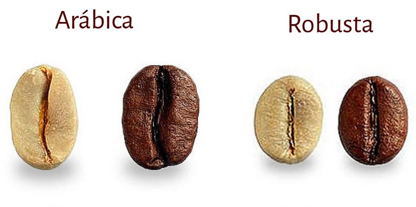

HISTORIA DEL CAFE

Tanto el café como la planta que produce el cafeto, son originarios de África, pero fueron los Árabes los primeros en extraer los granos del café. Son también quienes implantaron la costumbre de tomar café, motivado por la prohibición del Islam de ingerir alcohol. Es fácil entonces confundirse o entrar en dilema, con el verdadero origen del café, ya que antiguas leyendas sobre el cultivo y la costumbre de tomar café, provienen de los árabes, ya que son ellos los primeros en extraer los granos, tostarlos, molerlos y mezclarlos con agua caliente.
Leyenda
Una de las leyendas más populares sobre el descubrimiento del café, es la historia del pastor llamado Kaldi: Se trata de un pastor que vivió en la Etiopía del 300 d.C., y observó como su rebaño de cabras, tras alimentarse de los frutos de un arbusto desconocido, se mostraba de una manera muy extraña, muy enérgica y viva. Luego de observar este comportamiento, decidió ingerir y probar, él mismo, las bayas rojas de la planta, sintiéndose así expresivamente lleno de energía y excitación.
Tras experimentar tal estado, Kaldi llevó algunos de estos frutos y ramas al superior religioso de un monasterio cercano, los monjes al recibirlos, hirvieron las bayas y probaron la infusión resultante, descubriendo así, que con ella se mantenían despiertos y con energía. Así, lo utilizaban de estimulante, para mantener la vitalidad o quedarse despiertos también por las noches para rezar. Además, de casualidad, se dieron cuenta de que estos granos se podían tostar, y que la bebida elaborada a partir de los granos tostados, producía el mismo efecto y tenía un sabor más agradable.
Así, esta bebida se consideró religiosa en sus inicios, después estimulante y cual también se daba a los guerreros para luchar en las batallas, incluso pasó por tenerse como una bebida un tanto mágica con poderes curativos, y finalmente esta infusión se convirtió, en la bebida social del mundo Árabe, y de allí se extendió al resto del mundo.
Montañas de Etiopía
Los historiadores sitúan las primeras plantas de café en las regiones montañosas de Etiopía, antes del siglo IX. Desde allí pasaron al vecino Yemen, situado al Sur de la Península Arábica, desde donde fueron llevadas hasta Ceilán y la India. El café fue introducido en Europa cuando varios ejemplares de cafetos procedentes de Java fueron llevados al Jardín Botánico de Amsterdam. Desde entonces el cultivo del café se extendió por el continente, llegando incluso a las colonias que los países europeos tenían en América. El consumo de café comenzó a generalizarse en Europa a partir del siglo XVIII.
En un primer momento el café se consumía masticando los granos crudos o en una masa obtenida tras machacar los frutos y mezclarlos con grasa. Más tarde el café se convirtió en una bebida obtenida de la maceración de los granos en agua fría. A partir del siglo XIII se procedió a secar los granos al sol y tostarlos al fuego antes de preparar la infusión, tal y como se sigue realizando en la actualidad.
Cafeto
Desde un punto de vista botánico, el café pertenece, de forma ascendente al género Coffea, dentro de la familia de las Rubiáceas. Una familia botánica con unos 500 géneros y más de 6.000 especies. En el género Coffea, los diferentes cafetos se clasifican por especies y dentro de estas por variedades. Aunque existen más de setenta especies, las más comercializadas son cuatro o cinco, representando las dos primeras (Coffea arábica y Coffea canéfota), la práctica totalidad del cultivo.
Su tronco es recto y liso. Sus hojas son perennes y nacen de las ramas de forma opuesta, de dos en dos. Ovaladas y alargadas miden entre 10 y 20 centímetros y mantienen un color verde brillante todo el año. La flor es de color blanco, parecida al jazmín, con cinco pétalos y tiene una vida muy corta, ya que a los tres días de florecer, deja paso al fruto. El cafeto suele dar su primer fruto entre los tres y los cinco años de vida.
Los cafetos presentan formas, tamaños y características muy diferentes. Sin embargo, y con el fin de facilitar la recolección, en las plantaciones se podan entre los dos y los cuatro metros de altura. El fruto del cafeto tiene la apariencia de una cereza pequeña. Cuando nace es de color verde y durante los ocho u once meses siguientes, según la especie y la zona de cultivo y maduración, pasa por las distintas tonalidades que van del amarillo al rojo. En el interior de cada cereza o drupa, hay dos semillas con las caras planas enfrentadas y una hendidura central. Cada grano está envuelto por una fina película que recibe el nombre de piel de plata. Ambos granos, a su vez, están cubiertos por el pergamino y mucílago. Todo ello está separado de la piel por la pulpa.
Distribución geográfica
Por razones climatológicas, el café se cultiva sólo en países tropicales. Su cultivo abarca una franja que rodea el mundo, delimitada por los paralelos que señalan el trópico de Cáncer a unos 23º de latitud Norte y el de Capricornio a los mismos grados de latitud Sur, con una anchura de 4.000 km. Aunque hay más de 35 países productores de café en el mundo, destacan por volumen: Brasil, Vietnam, Colombia, Indonesia, Honduras, Etiopía, India, México, Guatemala, Uganda y Costa de Marfil.
Especies
Existen muchísimas especies de café pero hay dos en concreto que se utilizan generalmente para el consumo: arábica y robusta. Estas se diferencian según:
Forma del grano de café
A simple vista se puede diferenciar que la arábica tiene forma de haba (judía) y la robusta es más perfecta y redonda. La hendidura del grano, hace una "S" en los granos de arábica mientras que la robusta es totalmente recta. Visto de perfil, el grano de robusta es una esfera casi perfecta, como si estuviera cortada por la mitad.
Cultivo
La especie Robusta es más fácil de cultivar en comparación con Arábica debido a que es más resistente a insectos. Las plantas de robusta son notablemente más grandes y se cultivan a menor altitud.
Grano: cafeína y azúcares
La especie robusta tiene mucha más cafeína que la arábica (puede llegar a tener el doble). Sin embargo el grano de café arábica contiene más aceites y azúcares naturales. Esto afecta completamente al sabor del café siendo mucho más afrutado y dulce el arábica que el robusta, de sabor amargo intenso.
Uso
El arábica es el tipo de café que más se utiliza entre los amantes del café. Pero el Robusta también tiene cabida en este universo. Por ejemplo en muchos cafés para expreso se suele utilizar una mezcla de arábica y robusta. En la preparación de café instantáneo, por ejemplo, también se utiliza el robusta.